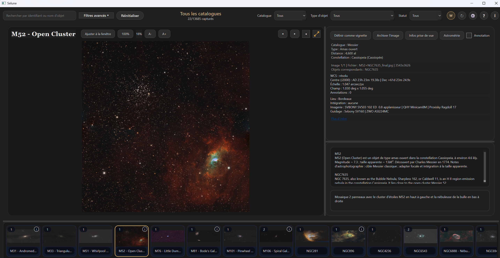
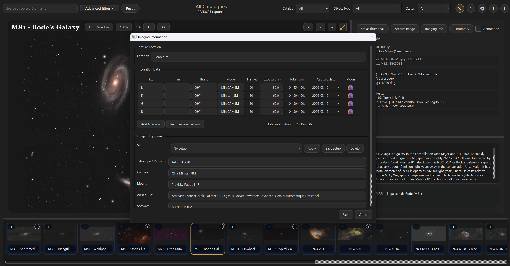
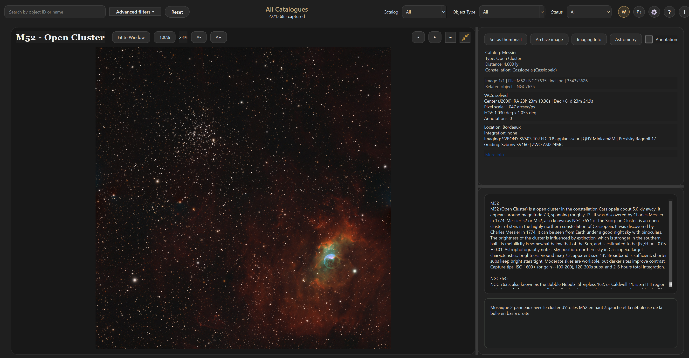
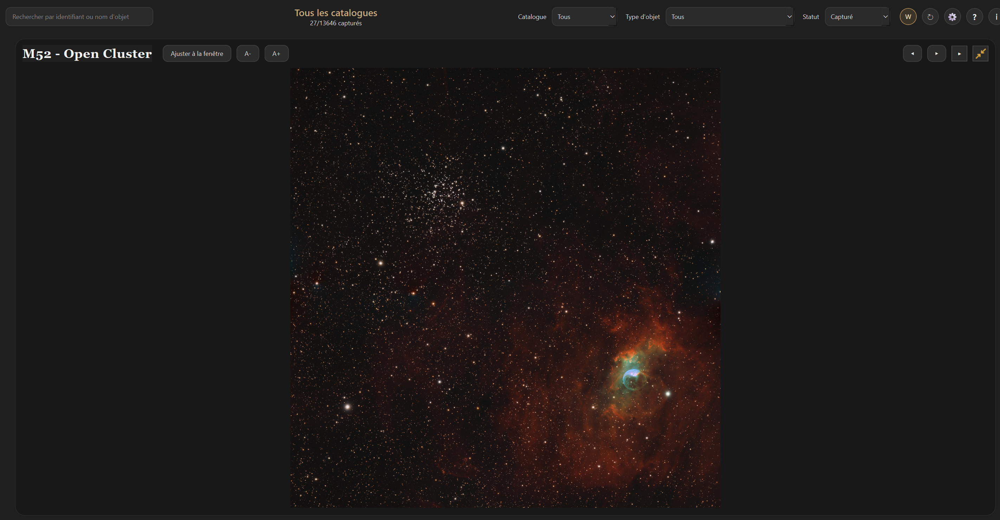
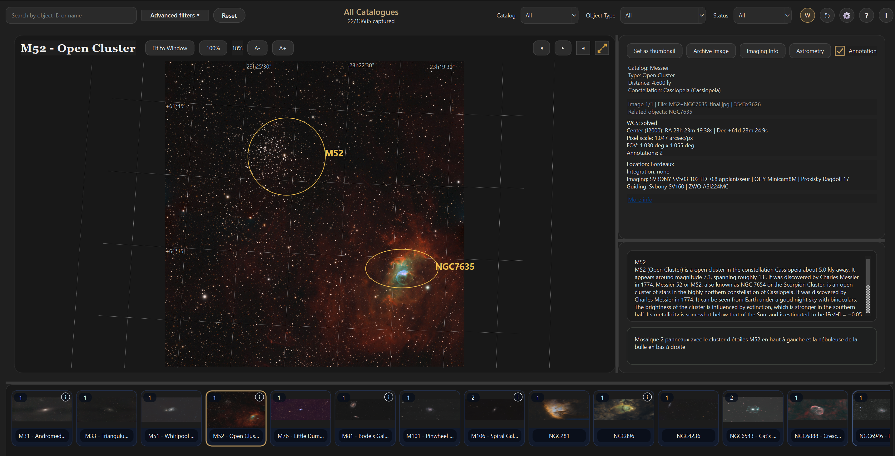

tranquiliste.dev
Selune - Catalog Viewer
Selune is a desktop application for organizing and browsing your deep sky object images.
Presentation
Selune is an independent fork of AstroCatalogueViewer .
The application offers a fast image grid, filters, rich metadata to track your deep sky photography. It allows you to organize your images by catalog or in a single master folder.
Screenshots
Here is a preview of the Selune interface.





What's New in the Selune Fork
- New catalogs (LBN, Sh2, VdB, etc.)
- Integrated migration of notes from AstroCatalogueViewer
- Updated interface with bottom photo strip
- Notes saved in a database (no more JSON)
- Added detailed information: exposures, setup, lunar phase…
- Astap based plate solving and annotation
Main Features
- Fast image grid with zoom, search, and filters (catalog, type, status)
- Detailed two-column view with zoom/pan and notes
- Wikipedia thumbnails for missing images (optional)
- Full-screen lightbox
- Intelligent name matching (Messier ↔ NGC)
- Image folders by catalog or single master folder
- Visibility suggestions based on RA/Dec + latitude/longitude
Downloads
macOS, Windows, and Linux versions are available on GitHub Releases.
Note: macOS versions are currently not working.
Total downloads: …
Download Selune